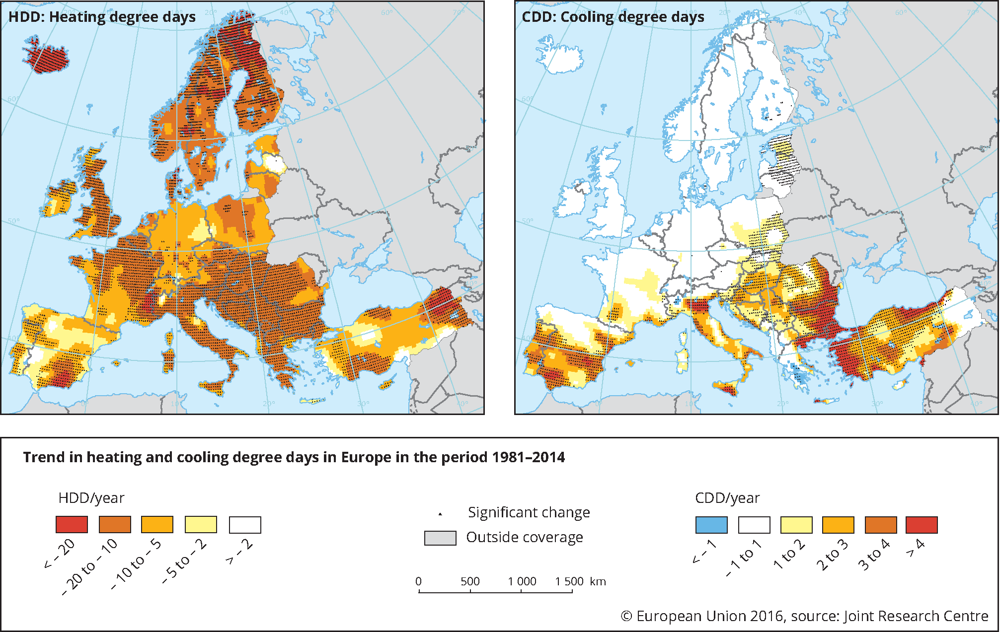

Chapter 3 Space Heating and Cooling
3.1 Thermodynamic Heat Transfer Mechanics
The key concept is the air temperature, which may be measured indoors or outdoors.
Air temperature is a measure of the kinetic energy of air.It is measured with a dry bulb thermometer, which is a thermometer exposed to air but shielded from radiation and humidity.
In space heating and temperature, when we talk about ambient temperature (the temperature of the surroundings) we assume, in general, that it is the air temperature We also have the mean radiant temperature concept, which is a measure of the amount of radiant heat transferred from a surface. The mean radiant temperature depends on the temperatures and emissivities of the surrounding surfaces as well as the view factor - the amount of the surface that is seen by the object.
So the mean radiant temperature experienced by a person in a room with the sunlight streaming varies based on how much of his/her body is in the sun. Finally, the operative temperature concept, which combines the effects of the air and mean radiant temperatures into one metric only.
It is often approximated as the average of air dry-bulb temperature and of the mean radiant temperature at the given place in a room.In buildings with low thermal mass, the operative temperature is sometimes considered to be simply the air temperature.
3.1.1 First law of thermodynamics
The first law of thermodynamics tells us that when energy is transferred as work, as heat, or with matter, into or out of a system, the system’s internal energy changes in accordance to the law of conservation of energy.
The difference between the conservation of energy in a close or open system is, in fact, that in an open system we have mass flow (for example outside air coming into a room) and this mass flow carries energy. This concept is fundamental to implement the heat balance in a control volume.
3.1.2 Second Law of Thermodynamics
The Second Law of Thermodynamics implies that heat will not transfer from a colder to a hotter body without some external source of energy.
We so have the heat transfer mechanisms whenever we have a temperature difference between two systems:
e.g. the outside environment and the room or the room and the occupant.
The heat gains through the building envelope (walls, windows, roofs and floors) occur through one of the heat transfer mechanisms: conduction, convection or radiation.
Conduction mechanism refers to heat exchange through solid surfaces (i.e. the transfer of heat by the interactions of atoms or molecules of a material through which the heat is being transferred).
Convection involves the transfer of heat by the mixing and motion of macroscopic portions of a fluid (i.e. to heat exchange between solid surfaces and moving fluids like a wall and air radiation mechanism refers to the heat exchange between two systems at different temperatures, like the exchange between the sky and a room through a transparent surface like a window).
Radiation , or radiant heat transfer, involves the transfer of heat by electromagnetic radiation that arises due to the temperature of a body. Heat flux is the rate of heat transfer per unit area. Heat is energy transferred as a result of a temperature difference.
Temperature is a measure of the amount of molecular energy contained in a substance.
Work is a transfer of energy resulting from a force acting through a distance.
Thermal conductivity is a measure of a substance’s ability to transfer heat through itself.
Log mean temperature difference is the ∆T that most accurately represents the ∆T for a heat exchanger.
The local heat transfer coefficient represents a measure of the ability to transfer heat through a stagnant film layer.
The overall heat transfer coefficient is the measure of the ability of a heat exchanger to transfer heat from one fluid to another.
The bulk temperature is the temperature of the fluid that best represents the majority of the fluid which is not physically connected to the heat transfer site.
3.1.2.1 Conservation of Energy Formula
(Closed System)
\[\Delta U = Q - W \]
Where:
\(\Delta U\) : as a change in internal energy
\(Q\) : the net quantity of heat supplied to the system by its surroundings
\(W\) : denotes the net work done by the system.
(Open System)
\[ \dot{Q} -\dot{W} = \sum \dot{m_{in}} - \dot{h_{out}}\]
Where:
\(\dot{m}\) : is the change in mass with respect to time (“flow”)
3.1.2.2 Heat transferred by:
3.1.2.3 1. Conduction
\[ \dot{Q}= KA \frac{T_{1}-T_{2}}{1} \]
Where:
\(K\) : is the thermal conductivity constant (obtained by experimentation in W/m.K.)
\(A\) : is the area of the surface
\(T\) : is for the temperature of the system
3.1.2.4 2. Convection
\[\dot{Q}= hA ({T_{1}-T_{2}}) \]
Where:
\(h\) : convective heat transfer coefficient
\(A\) : is the area implied in the heat transfer process
\(T\): is for the temperature of the system
3.1.2.5 3. Radiation
\[\dot{Q}= \varepsilon \sigma A ({T^{4}-T_0^{4}})\]
Where:
\(\varepsilon\) : is the emissivity of the system
\(\sigma\) : is the constant of Stephan-Boltzmann \(5.670367(13)\times10^{-8} W \cdot m^{-2} \cdot K^{-8} )\)
\(A\): is the area involved in the heat transfer by radiation
\(({T^{4}-T_0^{4}})\) : is the difference of temperature between two systems
3.2 Space Heating and Cooling Models
To estimate the needs for space heating and cooling energy services, we can use three types of models:
the models based in physical principles like thermodynamics and heat transfer;
the statistical models, based on correlations between data sources, like energy consumption data and weather data;
artificial intelligence models, which basically resort to methodologies like neural networks, fuzzy logic and other methodologies to construct models also based in data.
3.2.0.1 Physical models
Within physical models we can distinguish between two categories: simplified models,like the ones proposed in the norm ISO 52016 (the energy performance of buildings norms) or the detailed simulation tools, like Energy Plus, which basically use the same principles of the simplified models but are able to compute them for many data points and integrate all these details.
The simplified models use the physical principles of thermodynamics (first and second law), and heat and mass transfer and apply them to a control volume. It requires the definition of comfort conditions, and the climate influence.
These type of models have been used for many years to determine the heat and cooling needs of closed spaces in buildings, and provide reasonable estimations.However, it requires several assumptions and the accuracy depends on the quality of the assumptions (and the corresponding data).
3.2.0.2 Thermal simulation
Thermal simulation is the process of using computational tools, which are used in general in large buildings.In practice these tools implement the same principles of the simplified models, where each area in the building is a control volume.
However, it enables to link all the areas and account for the heat and mass flow between the different areas.It requires the development of a geometric model of the space, the detailed characterization of constructive solutions, the list of the equipment and its schedules of use and, finally, also climate information.
In general, we have a software tool to design the building and insert all the characterization, open tool or commercial, and then these tools use a computational tool that develops the thermal simulation.The most used tool is ENERGYPLUS, developed by the Department of Energy (DOE) of US.
3.3 Thermal Comfort
The human body needs to maintain its temperature somewhere between 36ºC to 37ºC and we are able to do it reasonably well when the surrounding or ambient temperature is between 20ºC and 50ºC. That means that when the ambient temperature is below, our body starts to loose heat through radiation, convection, and conduction and we need to spend energy to keep it warm; if the ambient temperature is above, our body starts to gain heat through radiation, convection, conduction and we need to keep it cool.
We feel cold when our skin temperature is under 37ºC. Then, the body initiates many mechanism to reduce heat losses:
Vasoconstriction to decrease the flow of heat to the skin;No sweating; Shivering to produce heat at the muscle level
Secretion of substances to increase heat production; and erection of hair to increase insulation.
On the other hand we feel hot when our skin temperature is above 37ºC.
The body only mechanism to loose heat is sweating, or evaporation of perspiration from the skin and the evaporative cooling from exhaled moisture.
The external conditions that influence thermal comfort are:
the ambient and radiant temperature, as it influences the heat exchange mechanism between the body and the environment
the relative humidity (as it influencesthe rate of heat exchange through perspiration
the air speed, as it influences the heat exchange through convection; our own metabolic rate (and the activity we are developing)
the clothes that people wear,as they help to control heat exchange
So, what is thermal Comfort?
As defined by the ASHRAE Standard 55 (which is the Thermal Environmental Conditions for Human Occupancy Standard), the thermal Comfort is basically a state of mind that expresses satisfaction about the thermal environment.
By nature, is subjective meaning that different persons have different assessments of thermal comfort. In the literature we have two models that are considered to assess thermal comfort:
the Predicted Mean Vote (PMV)
the adaptive model
The Predicted mean vote is an index that predicts the mean value of the thermal sensation votes (self-reported perceptions) of a large group of persons on a sensation scale expressed from -3 to +3 corresponding to the categories “cold,”cool“,”slightly cool“,”neutral“,”slight warm“,”warm“, and”hot“. It was proposed by Fanger and it is based in an analytical model with a series of real experiments, and was latter adopted as an ISO standard.
The original data was collected by subjecting a large number of people to different conditions within a climate chamber and having them select a position on the scale that best described their comfort sensation. A mathematical model of the relationship between all the environmental and physiological factors was considered and then derived from the data.
This method treats all occupants as the same and disregards location and adaptation to the thermal environment. It basically states that the indoor temperature should not change as the seasons do. Rather, there should be one set temperature year-round. This is taking a more passive stand that humans do not have to adapt to different temperatures since it will always be constant.
On the other hand the Adaptive model is a model that relates indoor design temperatures or acceptable temperature ranges to outdoor meteorological or climatological parameters. It is also based on the analyses of a database with results from 160 buildings, which revealed that occupants of naturally ventilated buildings accept and even prefer a wider range of temperatures than their counterparts in sealed, air conditioned buildings because their preferred temperature depends on outdoor conditions.
In general, it is assumed that any human will feel thermal Comfort within the following general conditions:
an ambient temperature between 20º and 27ºC
a relative humidity between 30% to 60%
So, this is represented in this psychrometric chart which is a chart that represents thermodynamic properties of moist air at constant pressure (1 atm) at sea level.
Free Online Interactive Psychrometric Chart
3.3.1 PMV
The PMV index is expressed by P.O. Fanger as
\[PMV = (0.303e ^{0.036M} + 0.028) L\]
where:
\(PMV\) : Predicted Mean Vote Index
\(L\) : thermal load - defined as the difference between the internal heat production and the heat loss to the actual environment - for a person at comfort skin temperature and evaporative heat loss by sweating at the actual activity level.
3.3.2 Hot water modeling
Hot water is used in many different applications.
One of the Main applications is for personal hygiene: bathing in households, hotels or hands washing in hospitals and toilets in buildings.Another application is for washing: dishes, laundry and other cleaning activities.
The main important variables that determine the hot water services are:
- the water volume that is need to be heated;
- the outlet temperature of the water after it is heated;
- the inlet temperature of the water in the piping system before is heated; and finally the piping heat losses during transportation from the heating system to the usage point (the taps)
The energy required to heat the water is given by the internal energy variation of the water volume that is going to be heated, which is basically given by:
the product between the water mass (volume times the density of water), the specific heat at constant pressure of water (which is basically 4.18 kJ/kg K for the water temperature around 20ºC which is the value of 1 calorie)
the temperature difference between the outlet temperature and the inlet temperature.
The water volume depends on the water flow coming out of the outlets (taps or faucet,shower heads, etc.) and the time during which the outlets are open. Different types of outlets have different flows: for example a standard shower head has a flow of 10 to 20 L per minute, while a low-flow or efficient shower head has a flow of 5 to 10 L per minute. So, for the same shower period (for example 5 min), a standard shower head will require a 50 to 100 L volume of hot water, while the low flow shower head will require only 25 to 50 L. This means that depending on the shower head, the water usage and the energy to heat the water, might be the double of the required.
A standard sink faucet has also a flow of 10 to 20 L, which means that using a sink faucet during 1 minutes consumes as much hot water as a dish washer machine cycle. The final temperature depends on the usage. For example, water at 60 ºC during 5 s will cause skin scalding - so, the shower temperature should never be above 45 ºC.
3.3.2.1 Legionella bacteria
However, if the technology that is used to produce the hot water has a storage tank, than the water needs to be stored at 60ºC and distributed such that the outlet temperature is never below 55ºC, in order to avoid the growth of legionella bacteria in the piping and storage system (remember that the legionella is the bacteria responsible for the legionnaire’s respiratory disease and it can be found in environments with fresh water (tanks, pipes) where the temperature is between 25 and 45 ºC. The bacteria is killed at temperatures above 60 ºC and will hibernate at temperatures below 20ºC. The initial temperature is the temperature at which the water is distributed in the piping system before it is heated. It depends on the climate conditions: usually is lower in winter and warmer in the summer and even in mild climates it can easily vary in 5ºC from winter to summer.
The European Guidelines for Control and Prevention of Travel Associated Legionnaires’ Disease recommend that hot water should be stored at 60 °C (140 °F) and distributed such that a temperature of at least 50 °C (122 °F) and preferably 55 °C (131 °F) is achieved within one minute at points of use.
3.4 Influence of climate
3.4.1 Degree Days
The main energy end-use in buildings around the world is space heating, in particular in regions with cold climates.The degree days are a very simple and direct methodology to estimate the impact of the climate of a certain region in the heating and cooling needs of the building.
If it is used for estimate:
- heating needs, we use the heating degree days (HDD)
- cooling needs, we use the cooling degree days (CDD).
Due to the simplicity, it also has some limitations.
In any case, the general method to estimate the heating needs but it is not so used to estimate the cooling needs. As the name says (degree days), this indicator is a product between time (in days) and temperature (in degrees).
It basically tries to estimate by calculating how many days of a year a certain place has a temperature under a certain reference level. It can be computed with daily data (or hourly data integrated to a day).
In general, the reference temperature is the outside temperature at which people start to use heating appliances, for example 15º or 16ºC, the exterior temperature is the temperature measured by weather stations. The cooling degree days calculation is very similar. The reference temperature is the outside temperature at which people start to use cooling appliances, for example 25ºC or 27ºC, and the exterior temperature is the temperature measured by weather stations.
So, for example, assuming 25ºC as the reference temperature, one day with an average daily temperature of 22ºC has 0 CDD. On the other hand, one day with an average daily temperature of 30ºC has 5 CDD.
The formula is similar to HDD. Notice however that in general, CDD are not considered as good estimates as HDD.
3.4.2 HDD (Heating Degree Days)
\[HDD (T_{ref}) =\frac{1}{24}\sum_{8760}^{i=1} max (T_{ref}- T_{ext, i} , 0)\]
Where:
\(T_{ref}\) : reference temperature
\(T_{ext}\) : exterior temperature
\(i\) : inlet temperatures of hot/cold fluid
It measures the product between the number of days and the number of degrees that the interior temperature is lower (heating) or higher (cooling) than a certain comfort temperature
3.4.3 CDD (Cooling Degree Days)
\[CDD (T_{ref}) =\frac{1}{24}\sum_{8760}^{i=1} max (T_{ref, i}- T_{ext} , 0)\]
3.4.4 Heating Degree Days (HDD) and Cooling Degree Days (CDD) in Europe
In terms of HDD in Europe, we can see that the Northern countries can reach 6000 HDD per year. In central Europe this value varies between 2000 and 4000 HDD per year, while on the South (especially in Mediterranean areas) the HDD vary between 600 and 1000 HDD.
In terms of CDD, the data is some more or less reversed. In general in Europe, the cooling needs estimate, using degree days is significantly smaller than heating needs.
In particular, in Northern Europe and in Central and Eastern Europe, it is usually less than 200 CDD per year while in the South (in the Mediterranean countries) it varies between 600 and 1000 CDD per year This is aligned with the energy consumption data we have analyzed for Europe.
 Source: Europe, JCR
More info:
https://www.eea.europa.eu/data-and-maps/indicators/heating-degree-days
https://www.eea.europa.eu/data-and-maps/indicators/heating-degree-days/assessment
https://www.eea.europa.eu/data-and-maps/figures/trend-in-heating-and-cooling
3.5 Thermal Balance
The thermal balance of a control volume consists of determining the balance of all heat gains and losses in a control volume (room).
We have four mechanisms that we need to consider:
The heat gains through the envelope (conduction, convection and radiation) - The air mass balance due to natural or artificial ventilation and air leakages through windows frames;
Compute solar gains, usually from radiation heat exchange between the room and the sun or the night sky and - The internal gains.
The heat transfer through the envelope consists of applying the first law of thermodynamics to a closed system.
In the case of a closed system, we have that the internal variation depends on the heat exchange through the borders of the system: walls, windows, floors, ceilings and roofs.
The direction of the heat flow through envelope is basically determined by the temperature difference between the air temperature of the room and the outside temperature.
In general we consider convection and conduction exchanges together, thus we use the global heat transfer coefficient U, which includes the conduction and convection coefficients. This coefficient depends on the material (or combination of materials) conductivity, k, and its thickness, L.
In general, the calculation of this heat flow through any surface is done using the electric analogous, where the heat flow is equivalent to current, the temperature difference is the voltage difference and the inverse of the thermal conductivity is the electrical resistance.
The internal gains are the gains caused by the heat release of occupants and appliances.
In general, these gains are estimated considering an average value per area. However, a more detailed calculation can be done.
In the case of the heat generated by occupants, it depends on either their clothes, metabolism and activity. It is measured in met - metabolism equivalent of task - which corresponds to the release of 58.15 W/m2.
As the average body area of a human being is 1.75 m2, 1 met is considered to be the heat released by an adult resting (which corresponds to 100 W), when writing the occupant may release 140-180 W, while doing workout can release 300-400 W.
Regarding the appliances, any electric appliance like computers and TVs releases heat, usually due to the power sources conversion and the processors. The lights also loose heat by radiation and convection.
Electrical appliances release in general the equivalent to 100 W/m2, while artificial light is considered to be 8 W/m2.The number of hours that the equipments are turned on also impacts the internal gains.
In these internal gains we do not consider the heat gains related to equipment’s that are specifically used for heating (and cooling), like fireplaces, radiators, or AC system.
Whenever we have a mass exchange in a control volume, there is an energy gain or loss, depending on the temperature and relative humidity conditions between the air mass inside the system and the new mass that is coming in or out. By applying the 1st law of thermodynamics to the control volume, we can see that it depends on the temperature difference and the mass flow.
Finally, the solar gains refers to the increase in temperature within a closed space that results from the heat gains through radiation with the sun.The amount of solar gain increases with the radiation intensity, due to season or hour of the day, and with the ability of a material (window, wall) to transmit or reflect the radiation. In general, opaque surfaces, like walls, resist to solar gains, while transparent surfaces, like windows, transmit solar gains.
3.5.0.1 Thermal Balance
\[Q= Q_{in} - Q_{out} = Q_{walls} + Q_{windows}+ Q_{roof}+ Q_{ceiling}\]
3.5.0.2 Ventilation and Air Leakages
\[\dot{Q} = \dot{m}cp\Delta T\]
Where:
\(cp\) : surface pressure coefficient
\(\Delta T\) : temperature difference
3.5.0.3 Overall Heat Transfer Coefficient (U)
\[Q = U\Delta T\]
\[U = \frac{1}{1/h1 + La/Ka + 1/h2}\]
Where:
\(q\) : heat transfer (W, J/s, Btu/h)
\(A\) : heat transfer area (\(m^2, ft^2\))
\(k\) : thermal conductivity of material (W/m K or W/m oC, Btu/(hr or ft2/ft))
\(dT\) : temperature gradient - difference - in the material (K or oC, oF)
\(s\) : material thickness (m, ft)
3.5.0.4 Heat Balance
\[Q = Q_{heating/cooling} + Q_{envelope} + Q_{internal}+ Q_{air}\]
3.5.0.5 Heat through envelope
\[Q_{envelope} = HDD\times Q_{x}\]
\[Q_{x} = A_{ceiling} \times U_{ceiling} \times A_{floor} \times U_{floor} A_{window} \times U_{window} + ( A_{wall} - A_{window }) \times U_{wall}\]
3.5.0.6 Heat through air exchange
\[Q = \dot{m} _{leakage} \times Cp \times V \times HDD\]
Where:
\(V\) : Volume of the room
3.5.0.7 Internal Gains
\[Q_{internal} = Q_{occupants} + Q_{appliances}\]
3.5.0.8 Solar Gains
\[Q_{solar} = AI [T+U(\sigma^\alpha)]\]
Where:
\(A\) : Area
\(I\):irradiation
\(TU(\sigma^\alpha)\) : Coefficient that depends on the transmissivity and the absorbed radiation by the surface, through each radiation enters the room
3.6 Simplified Heating and Cooling Services Modeling
When we are modeling the space heating and cooling needs, the first step consists in defining the control volume, by indicating the geometry of the space and the materials of the surfaces (and the corresponding properties like the width, thermal resistance, transmittance, etc.)
Then, we need to determine the climate conditions and for that we consider the heating degree days as an estimate for heating needs; and the cooling degree days as an estimate for cooling needs, knowing that the CDD do not work as good as HDD as an estimator for cooling needs, mostly because solar gains is summer are determinant for cooling needs.
Then, we need to perform the heat balance, knowing that there are four components:
- the heat gains through the envelope
- the internal gains
- the gains through leakages or ventilation
- the solar gains
The gains through the envelope consists of multiplying the HDD or CDD by the product of the area and the global heat transfer coefficient of the materials in walls, floors, windows and ceiling.
For the heat exchange through air (ventilation or leakages) we multiple the air flow from the ventilation system (mechanical or natural) by the volume of the room, the specific heat of air and the temperature difference, which may be also extrapolated through HDD or CDD.
The air flow may be represented also as a renovation rate, i.e. the amount of air volume that is replaced within a certain time period (like 1 hour). The internal gains, we need to evaluate the gains due to occupants (which depend on the number of occupants, the activity level and the schedule of occupation) and the appliances gains (which depend on the appliances and the number of hours they are used). In general, an average value per floor area is used.
Finally, the solar gains are computed as heat exchange through radiation, which is the only heat transfer mechanism that does not depend directly from the temperature difference. Thus, it is usually computed through the linearized expression called linearized radiative heat transfer coefficient.
This tells us that the solar gains depend on the area, the solar irradiation and a coefficient that depends on the transmissivity and the absorbed radiation by the surface, through each the radiation enters the room.
3.6.0.1 Material
- Simple glaze window
- Double Glaze window
- Simple break wall
- Double brick wall with air cavity
- Concrete floor
- Wood floor
- Ceiling
3.6.0.2 Hot water modelling
Changing Product Temperature - Heating up the Product with Steam
The amount of heat required to raise the temperature of a substance can be expressed as:
\[\Delta U = m c_{p} \Delta T\]
Where:
\(\Delta U\) : quantity (difference) of energy or heat (kJ)
\(m\) : mass of substance (kg)
\(c_{p}\) : specific heat of substance (kJ/kg K)
\(\Delta T\) : temperature (difference) rise of substance
\(c_{p}\) 4.18 kJ/kg.K
3.6.0.3 Pipe Losses
Finally, like in any system, the hot water distribution will generate losses in pipes due to conduction and convection losses. These losses are especially important when the hot water generation device is far away from the distribution point (more losses require that the generating system produces hot water at higher temperatures). The losses also depend on the material of the pipes and the insulation material and thickness that is used).
The losses by conduction in a pipe depend on the temperature difference between the water flowing in the pipe and the outside temperature, the thermal conductivity of the pipe and insulation material and the area, which is the area of a cylinder, and the thickness of the pipe which depend on the outer and inner diameters.
\[q_{p}= \pi (T_{2}-T_{1})/ ln (D_{out}/D)\]
3.6.1 References
EnergyPlus Url: https://energyplus.net/
Heat Transfer Terminology Summary (DOE Fundamentals Handbook Thermodynamics, Heat Transfer, and Fluid Flow) https://www.steamtablesonline.com/pdf/Thermodynamics-Volume1.pdf
ASHARAE Standard 55 - Thermal Environmental Conditions for Human Occupancy
Link: https://www.ashrae.org/resources--publications/bookstore/standard-55-and-user-s-manual
Predicted Mean Vote (PMV)
Fanger, P. O (1970). Thermal comfort : analysis and applications in environmental engineering. Danish Technical Press, Copenhagen
Fanger, P. O., & Toftum, J. (2002). Extension of the PMV model to non-air-conditioned building in warm climates. Energy and Buildings, Vol. 34, pp. 533-536.
Adaptive comfort model
de Dear, Richard; Brager, Gail (1998). “Developing an adaptive model of thermal comfort and preference”. ASHRAE Transactions. 104 (1): 145–67.
Psychrometric Chart https://www.ashrae.org/resources--publications/bookstore/psychrometrics